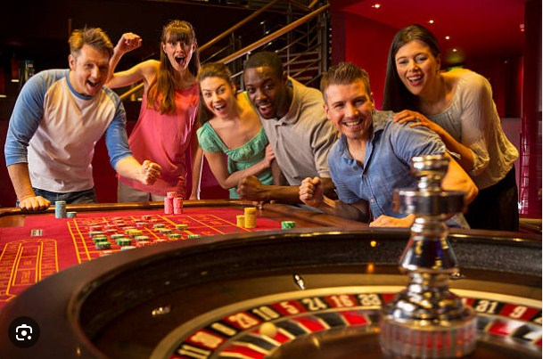
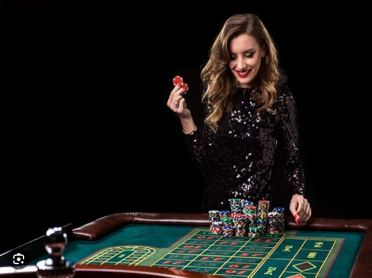
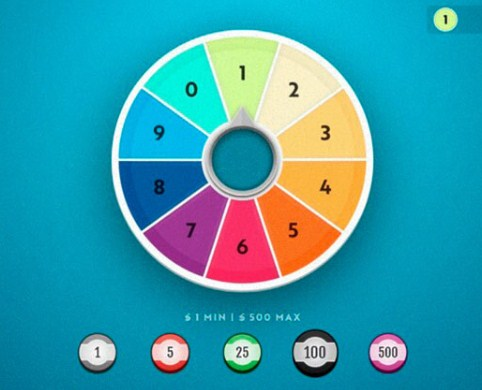

Cómo ganar en la ruleta sin ser un experto: consejos y estrategias
Ruleta / 17 jul, 2023
Entre todos los juegos clásicos de casino, la ruleta ciertamente ocupa un lugar destacado. Más allá del paño de color verde o rojo, del ruido de las máquinas tragamonedas y del parloteo de los jugadores, los cuales naturalmente llaman la atención, la ruleta es, sin duda, la reina del casino. De hecho, cada vez es más habitual que lleguen a la redacción de Bodog pedidos de artículos sobre cómo ganar en la ruleta.
¿Es posible ganar en la ruleta sin ser un experto? Como veremos, sí lo es. La ruleta ocupa un lugar destacado en una casa de apuestas precisamente porque sus apuestas son muy sencillas e intuitivas, lo que hace posible que incluso personas inexpertas puedan jugar y ganar en ella. Aquí veremos algunos consejos y estrategias para que los menos experimentados se desenvuelvan bien en la ruleta.
¿Qué es la ruleta?
La ruleta es un dispositivo mecánico basado en un proyecto del físico Pascal que consistía en crear una máquina de movimiento perpetuo, es decir, un aparato que, una vez puesto en marcha, no se detuviera nunca. Y aunque su experimento nunca funcionó, el prototipo sirvió de base para inventar un nuevo tipo de juego en el que se ponía en movimiento un disco giratorio con unas cavidades numeradas y luego se lanzaba una bola dentro del disco.

Dicho juego, en el que era posible hacer apuestas, pronto se hizo popular en los salones de la aristocracia francesa del siglo XVIII. Los hermanos Blanc fueron los encargados de difundir el juego, llevándolo a otros países europeos. El juego se hizo tan popular que cruzó el Atlántico y llegó a Estados Unidos con algunas modificaciones, como la introducción del águila americana y los dos ceros.
¿Cómo jugar a la ruleta sin tener experiencia?
Debido a que es un juego de reglas sencillas, cualquiera puede apostar en un juego de ruleta. Simplemente elige uno o varios números y espera a que la bola deje de girar para saber si ganarás o no.

Pero podemos aprender algunos consejos adicionales que, incluso sin ser un jugador experimentado, pueden ayudarte a minimizar las pérdidas y maximizar las ganancias. ¡Y eso es exactamente de lo que vamos a hablar ahora!
Pero podemos aprender algunos consejos adicionales que, incluso sin ser un jugador experimentado, pueden ayudarte a minimizar las pérdidas y maximizar las ganancias. ¡Y eso es exactamente de lo que vamos a hablar ahora!
Los mejores consejos para comenzar a jugar a la ruleta.
Algunos jugadores que desean iniciarse en el mundo de la ruleta, o incluso los nuevos usuarios de juegos, deben saber que para tener un buen desempeño con el dispositivo de Pascal, hay que conocer algunas particularidades, ya que la ruleta, a diferencia de los juegos de cartas, permite muchos tipos de apuestas.
Las apuestas, a pesar de ser bastante sencillas e intuitivas, requieren que el apostador sepa qué números pueden resultar ganadores con su apuesta, para poder explorar el potencial de las probabilidades.
Usa el bono de bienvenida
¡Comencemos hablando de economía! El famoso bono de bienvenida es una forma de aumentar tus fondos sin arriesgar demasiado dinero.
Echa un vistazo a la opción del bono de bienvenida que ofrece Bodog y regístrate para recibirlo. Después de todo, ¡tendrías que estar loco para rechazar ese dinero extra!
1. Las apuestas más pequeñas suponen más tiempo para jugar
Si la ruleta es un juego relativamente nuevo para ti, no hay razón para hacer apuestas arriesgadas durante las rondas. El mejor consejo que podemos darte es: haz apuestas pequeñas y mantente en el juego por más tiempo.

Lo ideal es establecer un monto de ganancia y, cuando lo alcances, dejar de jugar. Lo mismo ocurre con las pérdidas. Antes de comenzar a apostar, establece un monto de gasto para el juego. Si, en lugar de ganar, pierdes, detente cuando alcances el monto preestablecido. Controlar las ganancias y las pérdidas es parte de la personalidad de un buen jugador de casino.
2. Haz apuestas internas y externas
La ruleta posee básicamente dos tipos de apuestas: internas y externas. Las apuestas se dividen en dos tipos y se denominan así porque, al momento de realizar la apuesta, el lugar donde se colocan las fichas puede ser hacia el centro (internas) o hacia la periferia (externas). Las apuestas internas se hacen sobre uno o más números, mientras que las externas se hacen sobre la calidad de esos números.
En las apuestas internas podemos apostar directamente a un número o a un conjunto de números. Así, se puede apostar al número 13 colocando la ficha encima de su casilla, o al 13 y al 14 colocando la ficha en la línea que divide las casillas de ambos números. En las apuestas externas, por su parte, apostamos al negro o al rojo, o a si la bola caerá en la primera, segunda o tercera docena, o a si el número será par o impar.
3. Evita el uso de estrategias en el juego de la ruleta
Este consejo solo es válido para jugadores menos experimentados, ¿ok? Existen varios métodos como el Sistema Martingala, la Estrategia D’Alembert y el famoso Método James Bond, pero son adecuados para jugadores con más habilidades en la ruleta.
Si quieres saber más, vale la pena leer sobre estas estrategias; incluso tenemos artículos sobre ellas en nuestro blog. Paralelamente, sigue practicando para entender un poco más de este maravilloso y divertido juego.
4. Presta atención a los patrones de sorteo
Si suponemos que a lo largo de una amplia serie de tiradas de la ruleta, la probabilidad de que salga cada número es la misma, vale la pena prestar atención y ver cuáles números salieron menos y cuáles más. Los números menos sorteados pueden ser los próximos números a salir, con lo cual se completaría la serie.
Por otra parte, desafiando el dicho de que “un rayo no cae dos veces en el mismo lugar”, los números que salieron más pueden tener más probabilidades de volver a salir debido a pequeñas imperfecciones del dispositivo mecánico o simplemente por la variación de las condiciones de temperatura y presión del lugar.
Te presentamos los mejores juegos de ruleta en línea
Los juegos de ruleta en línea son actualmente la mejor opción para quienes desean disfrutar de buenos momentos, incluso pudiendo ganar dinero. A partir de su surgimiento en el siglo XVIII, la ruleta se fue perfeccionando en función de los intereses de los jugadores y los propietarios de las casas de apuestas. El resultado del desarrollo material y tecnológico ha permitido que hoy en día más personas puedan acceder a los juegos de ruleta en cualquier lugar.
A partir de un rudimentario dispositivo mecánico, se crearon muchos otros juegos de ese estilo; algunos incluso se convirtieron en favoritos de los jugadores. Bodog ofrece a los jugadores los juegos de ruleta más interesantes y entretenidos del mercado. Hablemos un poco de ellos.
Ruleta Clásica Americana
l paño de terciopelo azul es una invitación a los jugadores que deseen aventurarse en la Ruleta Americana en vivo. Las clásicas posibilidades de apuestas internas son: el “pleno”, que paga 35 a 1, el “a caballo”, que paga 17 a 1, la “calle o transversal”, que paga 11 a 1, el “cuadro”, que paga 8 a 1, los “vecinos”, que paga 6 a 1, la “seisena”, que paga 5 a 1, la “columna” y la “docena”, que pagan 2 a 1, y la “suerte simple”, que paga 1 a 1.
Con un RTP de 94,74 %, este juego clásico de ruleta americana es una buena opción para los jugadores que prefieren experimentar la forma yanqui de hacer girar la ruleta.
Spin the Wheel
El juego Spin the Wheel es una alternativa para quienes deseen experimentar el sabor de la ruleta pero no quieren perder tiempo en aprender términos como “pleno” o “vecinos”. Con un aspecto muy moderno y repleto de música electrónica de estilo new age, el juego llama la atención de quienes lo ven por primera vez.
La forma de apostar es bastante sencilla: basta con elegir un número del 0 al 9. Si sale tu apuesta, la parte central de la ruleta también girará para indicar qué multiplicador se utilizará para pagar tu apuesta. El jugador tendrá la posibilidad de recibir entre 1 y 4 veces el valor apostado.

Ruleta Clásica Europea
Los jugadores más conservadores ciertamente preferirán la Ruleta Clásica Europea. El más clásico de los juegos de ruleta se presenta en su versión en línea y cuenta con todas las características y posibilidades de apuestas de la versión clásica de la ruleta. Además de ofrecer apuestas internas, como plenos o a caballo, y externas, como docena o negro/rojo, este juego permite apuestas tales como vecinos del cero, números huérfanos y tercio de cilindro.
Además de poseer más probabilidades de apuestas, que solo se permiten en la ruleta europea, este juego tiene un RTP del 97,3 %, lo que se considera muy beneficioso para el jugador que busca hacer rendir aún más su dinero.
Y finalmente, juega a la ruleta cuando quieras
Las innovaciones tecnológicas y la acumulación han permitido que los equipos de ruleta se popularicen y desarrollen. Los juegos de ruleta en línea, a los que se puede jugar en cualquier momento y lugar desde todo tipo de dispositivos, son ahora una gran moda entre los jugadores de juegos de casino.
A partir de nuestros consejos, el apostador, aunque no sea un experto, puede aprovechar al máximo su tiempo, divertirse y hasta ganar dinero. Sigue estudiando y aprendiendo, y seguro alcanzarás tu objetivo.
Por que la gente nos prefieren
Somos la mejor alternativa para brindar siempre la mejor orientacion en las loterias de animalitos.